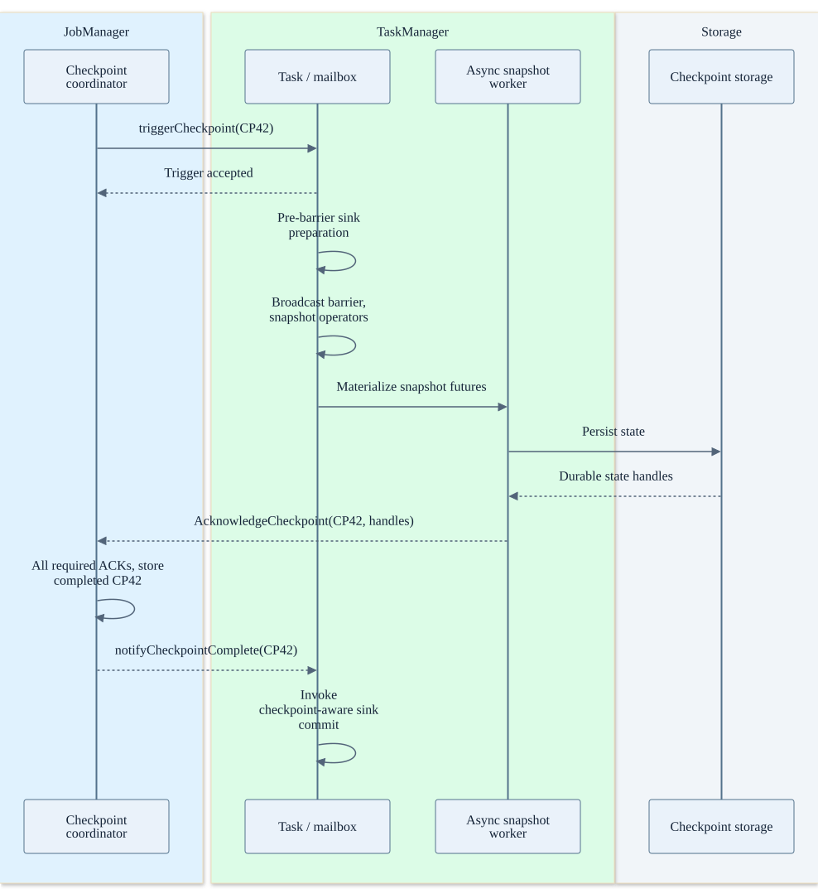

Chapter 08 · source-backed walkthrough
Flink: checkpoint and recovery protocol
A checkpoint creates a consistent recovery cut over source positions, keyed and operator state, and sink recovery information. It completes only after required durable snapshot acknowledgements, not when the initial trigger RPC returns.
Before the detail
The mental model
A completed checkpoint is a recoverable cut across the job. A barrier marks that cut in the data flow; a task acknowledgement contributes durable state handles to it.
Worked example: connect the system view to the code
CP41 contains next offset 100 and total 70. Work through offset 104 produces total 100. If CP42 never completes, restore CP41 and replay from 100. If CP42 completes with next offset 105, restore its state and recover its pending sink commit.
- Take the task cut
SubtaskCheckpointCoordinatorImpl coordinates barrier and snapshot work.
- Establish job completion
CheckpointCoordinator aggregates required state and records completion.
- Restore attempts
DefaultScheduler drives restart and state restoration.
Illustrative reasoning example using this chapter's source scope; not a recorded deployment or executed experiment.
Can the source snapshot alone authorize skipping input after failure?
No. Recovery needs the completed job checkpoint with matching operator and sink recovery state.
Choose a reading path · Terms and progress boundaries · Clarity review
01
The complete checkpoint timeline
The coordinator creates a pending checkpoint and triggers source tasks. TaskExecutor accepts the trigger RPC and routes it into the task. The task mailbox performs pre-barrier preparation, broadcasts the barrier, snapshots operators and arranges asynchronous snapshot materialization.
Downstream barriers arrive through the shuffle input gate, not through a separate checkpoint RPC to every record-processing step. Each downstream task snapshots at the appropriate barrier boundary. Async snapshot completion reports state handles to the coordinator. PendingCheckpoint tracks all required task, operator-coordinator and master state.
After the completed checkpoint has been stored, the coordinator notifies tasks. A sink committer may then finalize external output. An accepted trigger RPC is only acceptance of work; the later task-state acknowledgement is the snapshot evidence.
Trigger acceptance, state acknowledgement and sink commit
The three acknowledgements have different meanings. The durable checkpoint store is represented inside the coordinator lane.

02
Aligned versus unaligned cuts
For aligned checkpoints a barrier arriving on one input blocks post-barrier records from that input until the other relevant inputs reach the barrier. The operator snapshots a cut with no unmatched post-barrier input in its state.
Unaligned checkpoints retain in-flight channel data in checkpoint state, allowing progress under backpressure without waiting for a full alignment. The cost moves to checkpoint I/O, storage and restore work. Alternating behavior can switch from alignment according to the configured timeout policy.
The snapshot protocol must account for state and in-flight records together. Taking arbitrary backend copies without the barrier / channel protocol would not establish a consistent cut across two communicating tasks.
Checkpoint mode chooses where the waiting cost goes
Both modes preserve a recovery cut when used correctly. Unaligned does not remove checkpoint storage bandwidth limits.

| State location | Purpose | Can it recover after host loss? |
|---|---|---|
| Heap / local RocksDB / backend working state | Fast state reads and mutations | Only if a usable durable checkpoint / recovery source exists. |
| Remote completed checkpoint | Restore source positions and consistent operator / sink state | Yes, within storage durability and compatible configuration assumptions. |
| In-flight network buffers | Records between operators | Aligned cut avoids post-barrier ambiguity; unaligned stores channel state. |
| Local recovery cache | Reduce remote restore transfer | Optimization only; do not rely on a lost machine retaining it. |
03
Failure recovery and incomplete external commits
The scheduler chooses affected vertices, cancels attempts, resets them and restores the latest suitable completed checkpoint. StateAssignmentOperation distributes checkpoint state to new attempts, including key groups when parallelism changes. The source replays from the stored next offsets.
Failure before checkpoint completion leaves the old completed checkpoint as the recovery authority. Failure after checkpoint completion but before a sink receives the notification requires the sink to recover pending commits from durable committable state. Failure after the sink commits but before it reports success requires a retry-safe or reconcilable commit.
Thus an idempotent committer means repeated completion attempts do not create repeated logical effects. It is not merely a producer configured with enable.idempotence. Connector transaction lifetime must also cover checkpoint duration, downtime and recovery; expired external transactions can invalidate an otherwise durable Flink checkpoint.
Task recovery state machine
A checkpointed sink receipt can be retried after a failed attempt. The external authority decides whether it is already committed.

Inside the implementation
These excerpts come directly from the code paths used above. Expand a component to move from the system view into its implementation.
flink-barrier SubtaskCheckpointCoordinatorImpl.java:289
Pre-barrier preparation, barrier broadcast, state snapshot and async report.
flink/flink-runtime/src/main/java/org/apache/flink/streaming/runtime/tasks/SubtaskCheckpointCoordinatorImpl.java · 07805482705f
288 @Override
289 public void checkpointState(
290 CheckpointMetaData metadata,
291 CheckpointOptions options,
292 CheckpointMetricsBuilder metrics,
293 OperatorChain<?, ?> operatorChain,
294 boolean isTaskFinished,
295 Supplier<Boolean> isRunning)
296 throws Exception {
297
298 checkNotNull(options);
299 checkNotNull(metrics);
300
301 // All of the following steps happen as an atomic step from the perspective of barriers and
302 // records/watermarks/timers/callbacks.Test source inspected or located, not executed: TaskCheckpointingBehaviourTest.java
flink-checkpoint CheckpointCoordinator.java:1360
Completed checkpoint storage precedes notifications.
flink/flink-runtime/src/main/java/org/apache/flink/runtime/checkpoint/CheckpointCoordinator.java · 07805482705f
1359 */
1360 private void completePendingCheckpoint(PendingCheckpoint pendingCheckpoint)
1361 throws CheckpointException {
1362 final long checkpointId = pendingCheckpoint.getCheckpointID();
1363 final CompletedCheckpoint completedCheckpoint;
1364 final CompletedCheckpoint lastSubsumed;
1365 final CheckpointProperties props = pendingCheckpoint.getProps();
1366
1367 completedCheckpointStore.getSharedStateRegistry().checkpointCompleted(checkpointId);
1368
1369 try {
1370 completedCheckpoint = finalizeCheckpoint(pendingCheckpoint);
1371
1372 // the pending checkpoint must be discarded after the finalization
1373 Preconditions.checkState(pendingCheckpoint.isDisposed() && completedCheckpoint != null);Test source inspected or located, not executed: CheckpointCoordinatorRestoringTest.java
flink-restore DefaultScheduler.java:358
Cancel, reset, restore and redeploy task attempts.
flink/flink-runtime/src/main/java/org/apache/flink/runtime/scheduler/DefaultScheduler.java · 07805482705f
357
358 private void restartTasksWithDelay(final FailureHandlingResult failureHandlingResult) {
359 final Set<ExecutionVertexID> verticesToRestart =
360 failureHandlingResult.getVerticesToRestart();
361
362 final Set<ExecutionVertexVersion> executionVertexVersions =
363 new HashSet<>(
364 executionVertexVersioner
365 .recordVertexModifications(verticesToRestart)
366 .values());
367 final boolean globalRecovery = failureHandlingResult.isGlobalFailure();
368
369 if (globalRecovery) {
370 log.info(
371 "{} tasks will be restarted to recover from a global failure.",fk-commit KafkaCommitter.java:103
Retryable and fenced transaction failures are distinguished.
flink-connector-kafka/flink-connector-kafka/src/main/java/org/apache/flink/connector/kafka/sink/internal/KafkaCommitter.java · ae656dd6fe23
102 producer = writerProducer.orElseGet(() -> getProducer(committable));
103 producer.commitTransaction();
104 backchannel.send(TransactionFinished.successful(committable.getTransactionalId()));
105 } catch (RetriableException e) {
106 LOG.warn(
107 "Encountered retriable exception while committing {}.", transactionalId, e);
108 request.retryLater();
109 } catch (ProducerFencedException e) {
110 logFencedRequest(request, e);
111 handleFailedTransaction(producer);
112 request.signalFailedWithKnownReason(e);
113 } catch (InvalidTxnStateException e) {
114 // This exception only occurs when aborting after a commit or vice versa.
115 // It does not appear on double commits or double aborts.
116 LOG.error(Test source inspected or located, not executed: KafkaCommitterTest.java